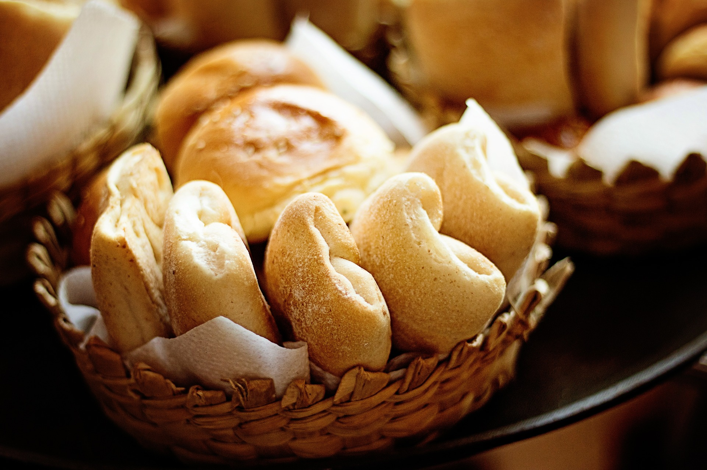

Welcome to Prime Dough!
At Prime Dough, we believe that the key to happiness lies in a warm and delicious baked good, whether it's a freshly baked loaf of bread or a decadent dessert. Our team of skilled bakers and pastry chefs is dedicated to crafting the highest quality products using only the freshest ingredients.
We specialize in a wide range of baked goods, including bread, pastries, cakes, and more. Our breads are made using traditional techniques and are baked fresh every day. Our pastries are created with the utmost care, with each one designed to be both beautiful and delicious. And our cakes are perfect for any occasion, from birthdays to weddings and everything in between.
We are committed to using only the finest ingredients in our products, including locally sourced and organic ingredients whenever possible. Our team is passionate about baking and takes great pride in creating the best possible products for our customers.
In addition to our delicious baked goods, we also offer a range of coffee and tea options to enjoy alongside your treat. Our cozy and inviting atmosphere is the perfect place to relax and enjoy a warm drink and a fresh pastry.
At Prime Dough, we are dedicated to providing our customers with the best possible experience, from the moment you step into our bakery to the last bite of your pastry. We are proud to be a part of the Ottawa community and look forward to serving you soon!
